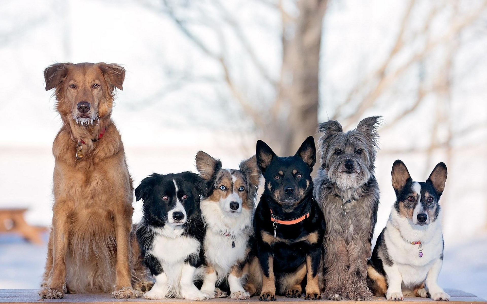

Породы собак
|
Породы собак: |
 Собаки - это наши друзья. Они всегда нас любят, поддержат, помогут, а иногда и подскажут. Также нам всем известны знаменитые выражения: «Собака – друг человека» и «Мы в ответе за тех, кого приручили». На данный момент существует много разных пород собак, которые направлены на разные виды деятельности. И многие люди в наше время имеют, заводят и хотят завести собаку. Мой сайт направлен на то, чтобы помочь вам разобраться и выбрать породу собаки, которая вам по душе, рассказать немножко о ней, о её особенностях и как за ней ухаживать. Если хотите по подробней узнать об одной из пород перейдите по нужной ссылке. Надеюсь моя помощь будет полозна. |